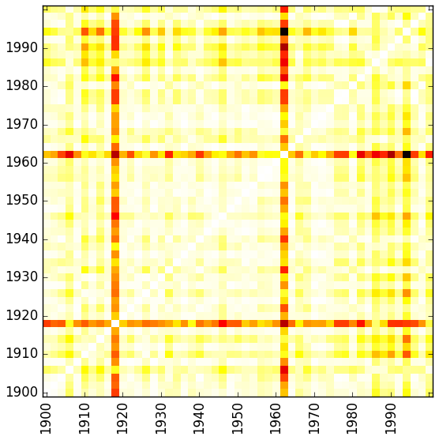
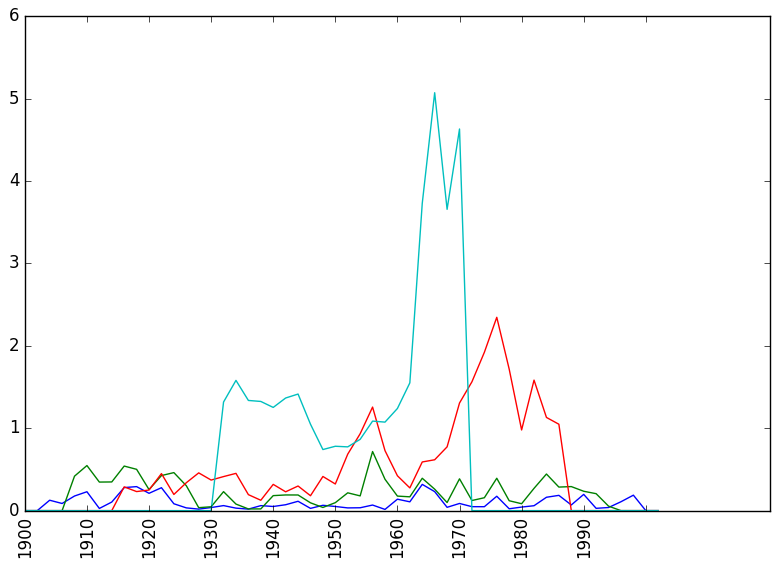

<!doctype html>
<html lang="en">
<head>
<meta charset="utf-8">
<title>Epochenschwellen FJR17</title>
<meta name="author" content="Christof Schöch">
<meta name="description" content="Slides">
<meta name="apple-mobile-web-app-capable" content="yes">
<meta name="apple-mobile-web-app-status-bar-style" content="black-translucent">
<meta name="viewport" content="width=device-width, initial-scale=1.0, maximum-scale=1.0, user-scalable=no, minimal-ui">
<link rel="stylesheet" href="css/reveal.css">
<link rel="stylesheet" href="css/theme/simple.css" id="theme">
<link rel="stylesheet" href="lib/css/zenburn.css">
<script>
var link = document.createElement( 'link' );
link.rel = 'stylesheet';
link.type = 'text/css';
link.href = window.location.search.match( /print-pdf/gi ) ? 'css/print/pdf.css' : 'css/print/paper.css';
document.getElementsByTagName( 'head' )[0].appendChild( link );
</script>
<!--[if lt IE 9]>
<script src="lib/js/html5shiv.js"></script>
<![endif]-->
</head>

<body>
<div class="reveal">
<div class="slides">
<section data-markdown="" data-separator="^\n---\n" data-separator-vertical="^\n--\n" data-charset="utf-8">
<script type="text/template">

<!--  vvvvv THIS IS WHERE THE CONTENT GOES! vvvvvvv  -->

## Epochenschwellen als Phasen beschleunigter literarischer Entwicklung?
<hr/>
<br/>
<br/>
<small>Christof Schöch, Ulrike Henny, <br/>José Calvo Tello, Katrin Betz, Daniel Schlör <br/>(CLiGS, Würzburg)</small>
<br/>
<br/>
<small>Forum Junge Romanistik<br/>Göttingen, März 2017</small>
<br/>
<br/>
<small>Folien: http://christofs.github.io/frj17</small>
<br/>
<hr/>
<p></img>&nbsp;&nbsp;&nbsp;&nbsp;&nbsp;&nbsp;</img>&nbsp;&nbsp;&nbsp;&nbsp;&nbsp;&nbsp;</img></p>


---
## Überblick
<br/>
* Fragestellung, Hypothesen und Ziele
* Die Textsammlung
* Die Methoden
* Ergebnisse
* Fazit

---
## Fragestellung, Hypothesen und Ziele

--
### Literaturgeschichtliche Fragestellung
<br/>

Gehen Transformationen literarischer Formen gleichförmig vor sich? 

Oder gibt es Phasen beschleunigter Veränderungen?

--
### Hypothese
<br/>

Es gibt Phasen beschleunigter Veränderung, 
<br/>die als Epochenschwellen in Frage kommen.

> "Epochen sind Zuschreibungen von bedeutsamen Übergängen. Der Übergang selber 
ist dabei eine Zäsur, die die vorangegangene Epoche von der folgenden trennt."

(Seele 2008)


--
### Fragen
<br/>
Nachweis von beschleunigter Veränderung und Epochenschwellen ist methodisch nicht einfach.

Welche Faktoren lösen sie aus?

Können sie in Formen und Inhalten der Literatur nachgewiesen werden?

--
### Fragen
<br/>

> "Wann ist etwas neu und dabei so neu, dass es in der Betrachtung ex post zur Zäsur und 
Neubenennung eines Sinnabschnitts führt?"

(Seele 2008)

--
### Annahmen
<br/>
* bekannte Strukturen im Hintergrund
* konstant fortschreitende Entwicklung
* Neuheit ist i.d.R. relativ neu

> "eine Frage der Kombination und ihrer Wahrnehmung"

--
### Ziele
<br/>

* Veränderungen nachvollziehen

 * mit Hilfe quantitativer, digitaler Methoden
 * auf einer breiten Textbasis
 * formale Aspekte &amp; thematische Entwicklungen über die Zeit
	
* mögliche Epochenschwellen ermitteln, wo Veränderungen...

 * sich verändern
 * besonders deutlich hervortreten
 * beschleunigt sind


---
## Die Textsammlung

* französischer Roman im 20. Jahrhundert
* 1900 bis 1999
* mindestens 1 Roman pro Jahr


--
### Autoren und Romane pro Jahr
<a href="img/novels-authors-years.svg"></a>

--
### Romane nach Dekaden und Geschlecht
<a href="img/dist_by-gender.svg"></a>

--
### Romane nach Dekaden und Untergattung
<a href="img/dist_by-subgenre.svg"></a>


---
## Methoden
<br/>


---
## Ergebnisse
<table>
  <tbody>
    <tr>
      <td><div style="text-align:left;"><a href="img/topics_cosim_v2.png"></a></div></td>
      <td><div style="text-align:right;"><a href="img/tpx_cosim_2.png"></a></div></td>
    </tr>
    <tr>
      <td><div style="text-align:left;"><a href="img/topics_novelties_v2.png"></a></div></td>
      <td><div style="text-align:right;"><a href="img/tpx_novelties-cosine_2.png"></a></div></td>
    </tr>
  </tbody>
</table>


---
## Fazit
<br/>


---
<br/>
<br/>
## Vielen Dank! 
<br/>
<br/>
<br/>
<br/>
<br/>
<br/>
<br/>
<small>CLiGS, 2017</small>
<br/>
<small><http://cligs.hypotheses.de></small>
<br/>
<small><a href="https://creativecommons.org/licenses/by/4.0/">CC-BY 4.0</a></small>
<br/>


<!--^^^^^^^ DON'T TOUCH UNLESS YOU KNOW WHAT YOU'RE DOING :-) ^^^^^^^-->

</script>
</section>
</div>
</div>

<script src="lib/js/head.min.js"></script>
<script src="js/reveal.js"></script>
<script>
// Full list of configuration options available at:
// https://github.com/hakimel/reveal.js#configuration
Reveal.initialize({
    controls: true,
    progress: true,
    history: true,
    center: true,
    transition: 'slide', // none/fade/slide/convex/concave/zoom
    // Optional reveal.js plugins
    dependencies: [
        { src: 'lib/js/classList.js', condition: function() { return !document.body.classList; } },
        { src: 'plugin/markdown/marked.js', condition: function() { return !!document.querySelector( '[data-markdown]' ); } },
        { src: 'plugin/markdown/markdown.js', condition: function() { return !!document.querySelector( '[data-markdown]' ); } },
        { src: 'plugin/highlight/highlight.js', async: true, callback: function() { hljs.initHighlightingOnLoad(); } },
        { src: 'plugin/zoom-js/zoom.js', async: true },
        { src: 'plugin/notes/notes.js', async: true }
        ]
    });
</script>
</body>
</html>
